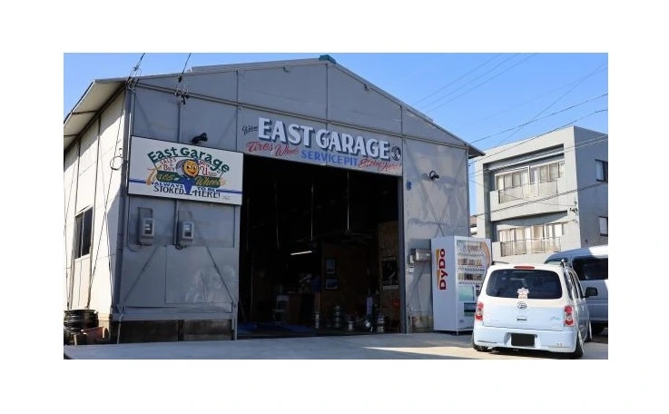
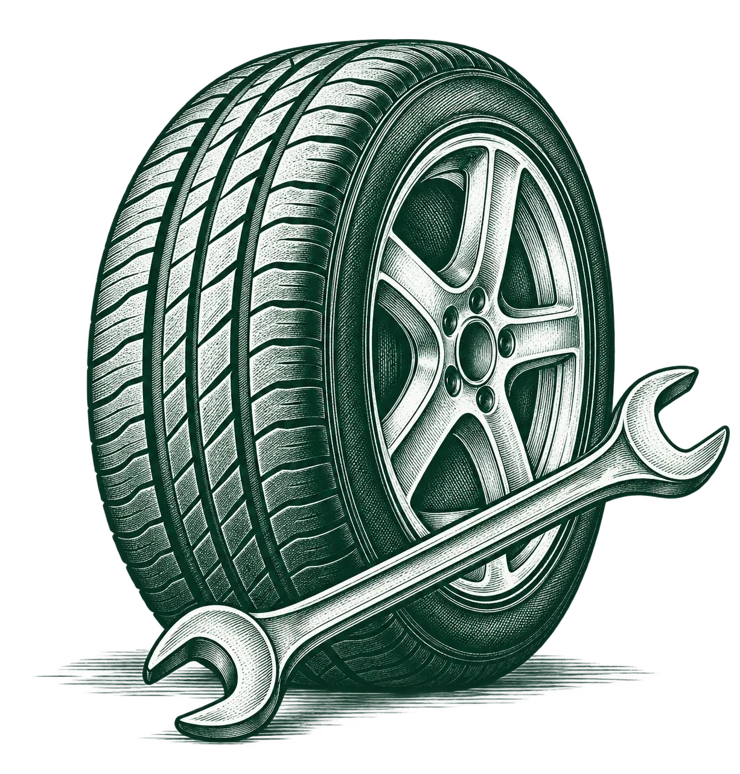
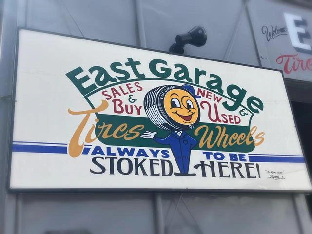
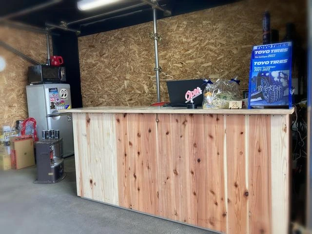

愛知・豊橋のタイヤ＆ホイールショップ10:00–19:00 ／ 日曜定休

持ち込みタイヤ交換✦新品・中古タイヤ✦パーツ取付・カスタム
Our services
いつもの交換も、
こだわりの一本も。

いい足元で、
いい毎日を。
From the pit
いつもの一台も。
大切な一台も。
軽自動車からミニバン、クラシックカーまで。
ガレージでの仕事を、少しご紹介。
最近のクルマや、お店の様子はこちら。Instagramを見る
Hello, neighbor.
この看板が、
目印です。


タイヤの話も、
クルマの話も。
豊橋・小畷町。タイヤとホイールが並ぶ、
街の小さなガレージです。
この看板を描いたのは、お店のお客さん。
その方のボルボのタイヤ交換も、
ここで手がけています。
いつもの交換から、こだわりの足元まで。
まずは、あなたの一台の話を。
Let's talk tires.
まずは、
タイヤの話から。
車種やタイヤサイズがわかると、
ご相談がスムーズです。
わからないことは、そのままお聞かせください。
タイヤサイズは、どこを見る？
タイヤの側面にある数字をご確認ください。
205 / 55 R16上記は表記の一例です。読み方がわからない場合は、車種だけでもお伝えください。
- 1内容を相談
車種やご希望をお聞かせください。
- 2料金・日程を確認
対応可否と作業日時を店舗へ確認。
- 3ご来店
お約束の日時に、ガレージへ。
See you at the garage.
East Garageイーストガレージ
- 住所
- 〒440-0873
愛知県豊橋市小畷町396 - 営業時間
- 10:00–19:00
- 定休日
- 日曜日
臨時休業など、最新のお知らせはInstagramでご確認ください。